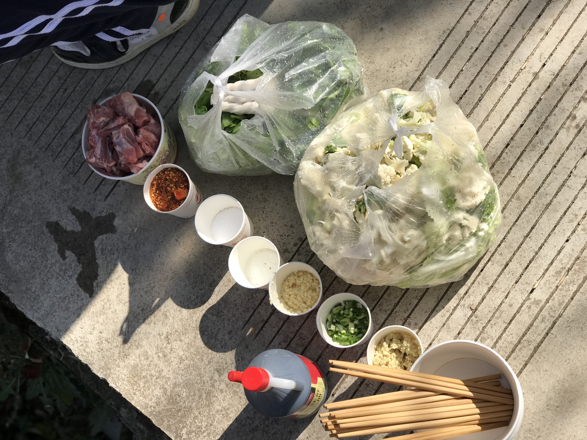
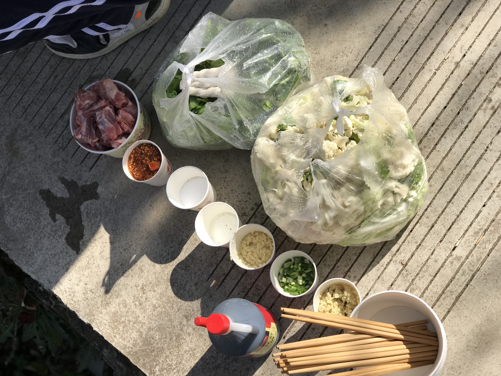

Starting of this Journey
QDHS@Laoying Middle School
This is a traditional Christmas project at QDHS. Under the guidance of teachers, our high school has designed a complete two-week course with a total of 110 class hours. We went to Laoying Middle School in Baoshan, Yunnan to teach in person and went out to play with them. It has been an amazing journey for me, both as an educator and as an educated person.

 
